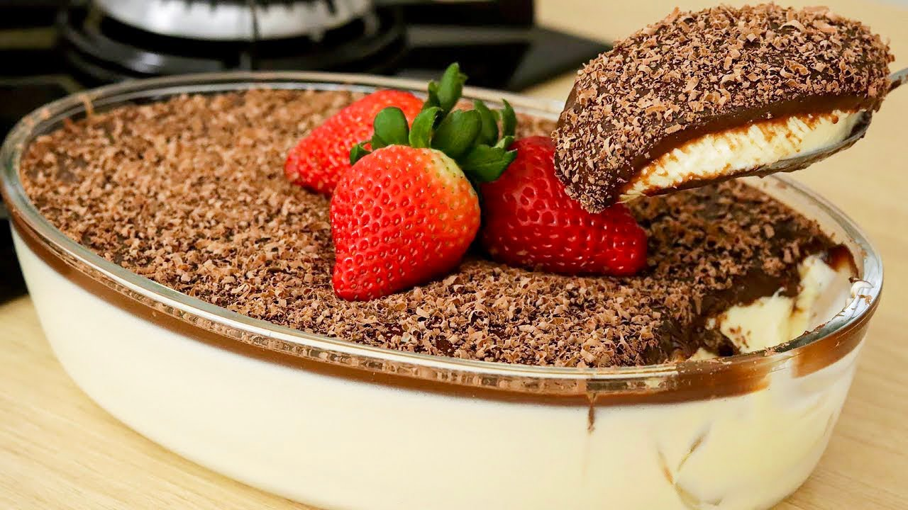
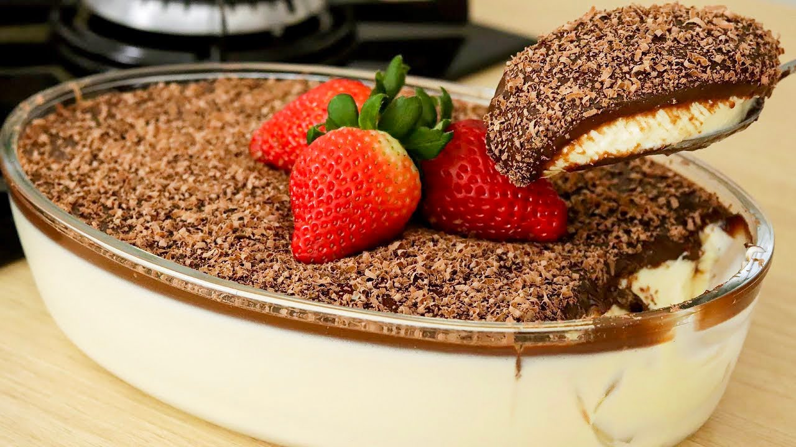

Talharim ao molho camarão
200g de massa fresca
100g de camarão rosa médio
1/2 cebola
2 dentes de alho
2 tomates vermelhos bem maduros
150g de creme de leite fresco
Mix de pimentas a gosto
Salsinha a gosto

Massa tradicional
1 kg de farinha
500 a 650 ml de água
30 ml de azeite de oliva
10 g de fermento
30 g de sal
Tiramisù clássico
3 ovos (gema e clara separadas)
125g de açúcar
250g de mascarpone
200ml de café expresso frio
4 colheres (sopa) de marsala doce
32 biscoitos champanhe
75g de chocolate meio amargo ralado